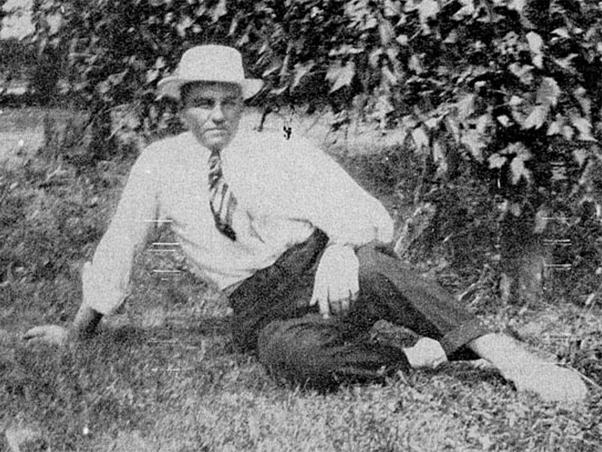

My Wonderful Uncle – By Carol Woods
Although all of my father’s younger brothers were dear to me, my Uncle Edwin Mayer the second eldest, was my favorite because of one unique quality. This was a completely loving, generous nature which stood out like a beacon and enabled him to see only the best in every person or situation. To all who knew him, young and old alike, he radiated love like a perpetual Santa Claus.
Uncle Edwin thrived on hard work. He loved farming and never seemed to mind the long hours. He could be serious, but he was never grim. It had to be because of his own special philosophy of life. He always said it in German, but translated it means simply this: “Things will work out.”
Just being around Uncle Edwin made people happy, and vice versa. He loved being around people. It was no coincidence that most of the family reunions took place at his farm, and anything would serve as a reason for a get-together. In the spring, when the barn was empty waiting for the first cutting of hay, there would be a barn dance. During the hot summer, he knew the city relatives enjoyed a drive to the country to cool off. So we had lawn barbeques under his big shade trees. When fall came and the hickory nuts from his many trees lay on the ground, everyone got invited for a nut picking party followed by a pot luck supper accompanied by the usual good time and overabundance of food. The first New Year’s Eve that I was ever allowed to stay up until midnight was spent at Uncle Edwin’s. We played parlor games, and I won a prize which I still treasure to this day.
One day while visiting my parents Uncle Edwin made a confession. “You know what,” he said: “I’ve always wanted to own a red car but never got to doing anything about it. I decided now was the time. So I went down and ordered one.” It didn’t matter to him that he was getting along in years. His keen sense of fun was telling him “better late than never.”
Yet this last wish was to be denied him. Before his coveted red car was delivered, Uncle Edwin died peacefully in his sleep. I felt bitter that death should cheat him of his chance to have something he wanted after he had given so much to others. When I think of it, though, perhaps it wouldn’t have bothered him so much after all. Perhaps he would have considered it a higher tribute to have others want more for him than he wanted for himself. But if it is true, as Henry Ward Beecher has said, that “every charitable act is a stepping stone toward heaven,” then for my Uncle Edwin that journey was all but complete when he left this life behind.